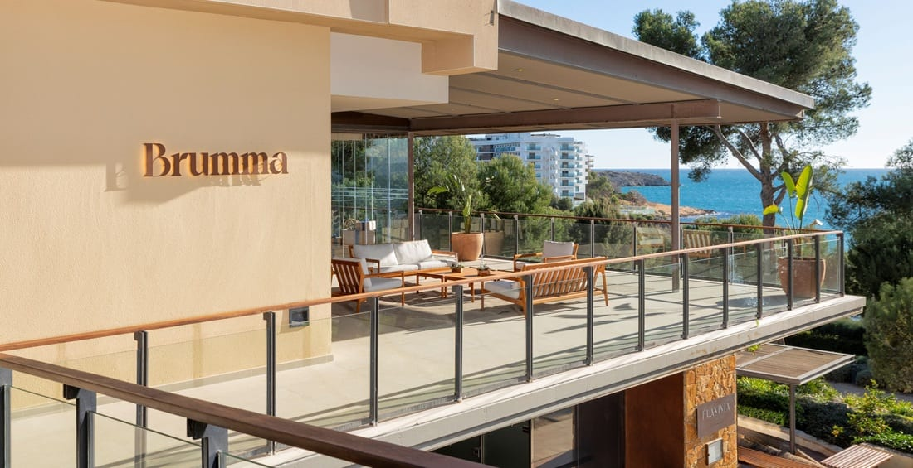
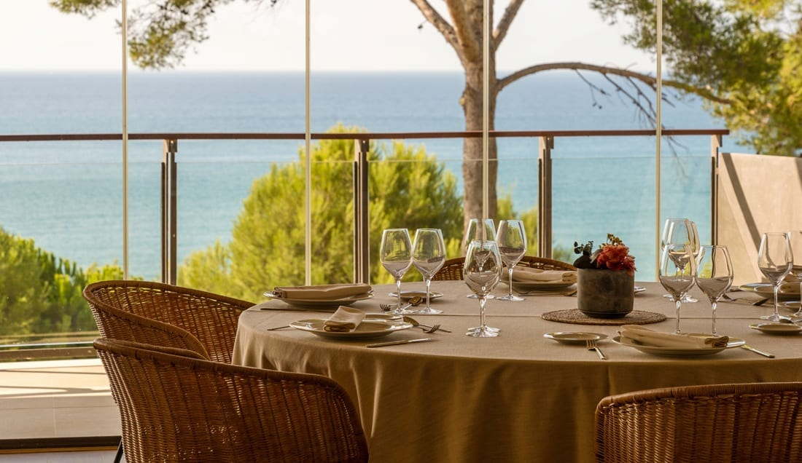
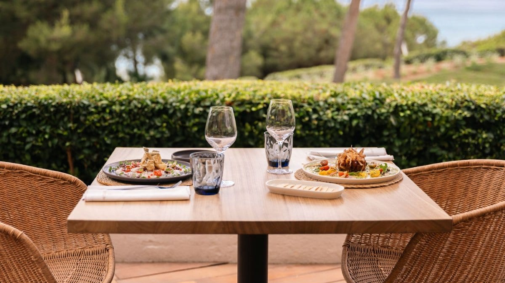
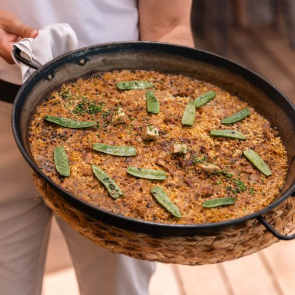

De Lumine a Infinitum: el mejor Beach Club de Europa, en casa
El resort que durante años conocimos como Lumine Beach & Golf Community se ha reinventado. Hoy es Infinitum Resort, y con la nueva identidad ha llegado también una apuesta gastronómica de otro nivel: siete espacios de restauración, tres galardones consecutivos como Mejor Beach Club de Europa, y una visión culinaria que sitúa el litoral del Camp de Tarragona en el mapa de la gastronomía premium. Todo ello en pleno corazón de la Costa Daurada, a veinte minutos del AVE y con el Mediterráneo como telón de fondo.
Brumma es la sala interior del Flamma Beach Foodhouse: el rincón más exclusivo de un resort que ya es referencia en Europa. Mismas vistas al Mediterráneo, mismo producto, mismo fuego —pero en un formato íntimo y cuidado que lo convierte en el escenario perfecto para una noche como la que nos espera el 2 de julio. No es fácil que los Gourmets de Tarragona encuentren un marco a la altura. Esta noche, lo tienen.


Fuego, producto y una visión que ha crecido durante nueve años
La propuesta de Brumma gira alrededor del fuego. El Josper y la brasa son los ejes de una cocina que trabaja cortes madurados, arroces caldosos y producto del litoral con una ejecución directa y sin artificios. Tártar de atún Balfegó, croquetas de chuletón con ajo negro, mejillones al vapor, pulpo a la brasa, bogavante, arroces a la llama: cada plato habla del mar y la tierra que rodean Infinitum Resort.
Al frente de la cocina está Guillem Martínez Batiste, formado en los Jesuïtes de Sarrià y con nueve años de trayectoria en Infinitum —donde conoce cada rincón y cada producto. En los últimos meses ha asumido la dirección culinaria de todos los espacios gastronómicos del resort, una confianza que se nota en el plato. Para el 2 de julio ha diseñado algo más que un menú: un recorrido por las siete denominaciones de origen catalanas que es, en el fondo, un retrato de por qué la gastronomía de este territorio merece más atención de la que recibe.

Una noche con dos ponentes de excepción
Programa de la velada

Las personas detrás de Brumma
Guillem Martínez Batiste
Chef & Director Culinario
Formado en los Jesuïtes de Sarrià. Nueve años en Infinitum Resort, donde recientemente ha asumido la dirección culinaria de todos los espacios gastronómicos.
Esteban Puga Claver
Director de F&B · Infinitum Resort
Familia de hosteleros de Tarragona con vocación en el ADN. Cinco años al frente de la estrategia gastronómica de Infinitum, con una visión clara: que un resort de golf con tres campos y Beach Club europeo de referencia sea también un destino culinario de primer nivel. Lo está consiguiendo.
Aroa Ruiz Ait
Restaurant Manager
Responsable de la experiencia de sala en Brumma y Flamma Beach Foodhouse. Coordina el equipo de servicio y garantiza que cada visita esté a la altura del entorno.
Ficha del restaurante
Durante la cena compartiremos algunos momentos en stories. La crónica completa llegará días después.
Crónica · Próximamente